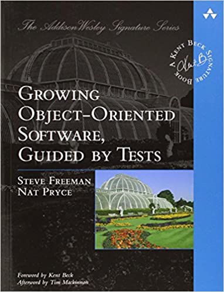
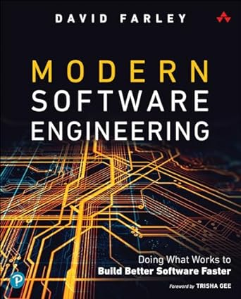
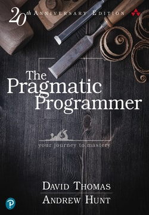
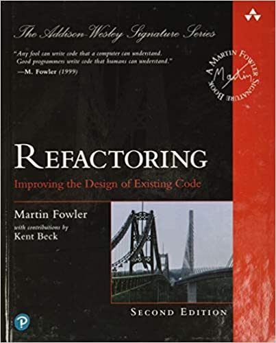

Code
There are tons of books about coding. Here, you'll find a bunch of them that will help you become a better software engineer, regardless of the languages you use.
Growing Object Oriented Software, Guided By Tests
Steve Freeman, Nat Pryce
A great learning resource for understanding how to use Test-Driven Development as a design strategy for building software that's resilient and user-focused.
Read more about Growing Object Oriented Software, Guided By Tests / Buy Growing Object Oriented Software, Guided By TestsModern Software Engineering
David Farley
An illuminating series of essays that pushes back against the idea of software engineering as a type of 'craft'. Instead, David Farley compellingly shows how software professionals should take a more empirical and scientific approach to building and maintaining applications and systems.
Read more about Modern Software Engineering / Buy Modern Software EngineeringThe Pragmatic Programmer
David Thomas, Andrew Hunt
A bible of great advice to bear in mind when writing code, architecting applications and being professional with software work. Timeless information.
Read more about The Pragmatic Programmer / Buy The Pragmatic ProgrammerRefactoring
Martin Fowler
The go-to compendium for understanding what refactoring is, and the various strategies you can use for improving your code.
Read more about Refactoring / Buy Refactoring